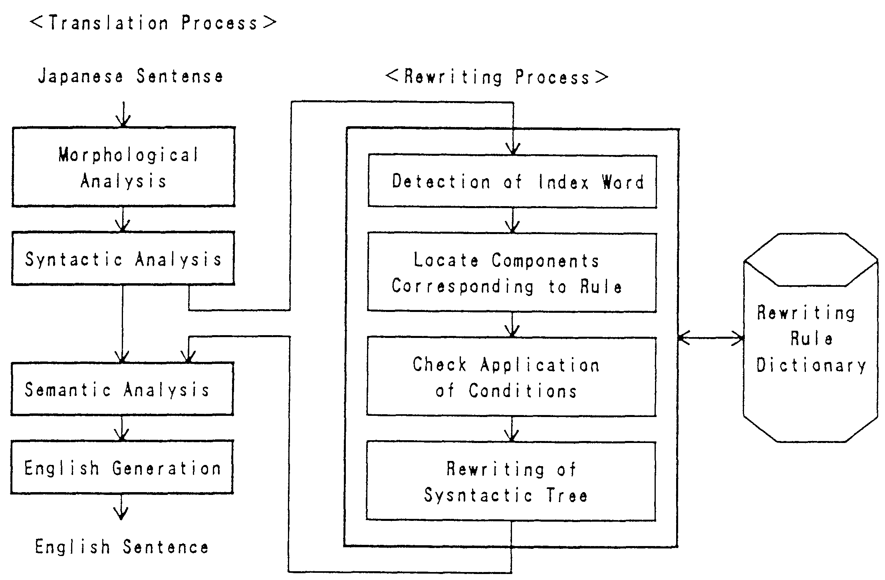
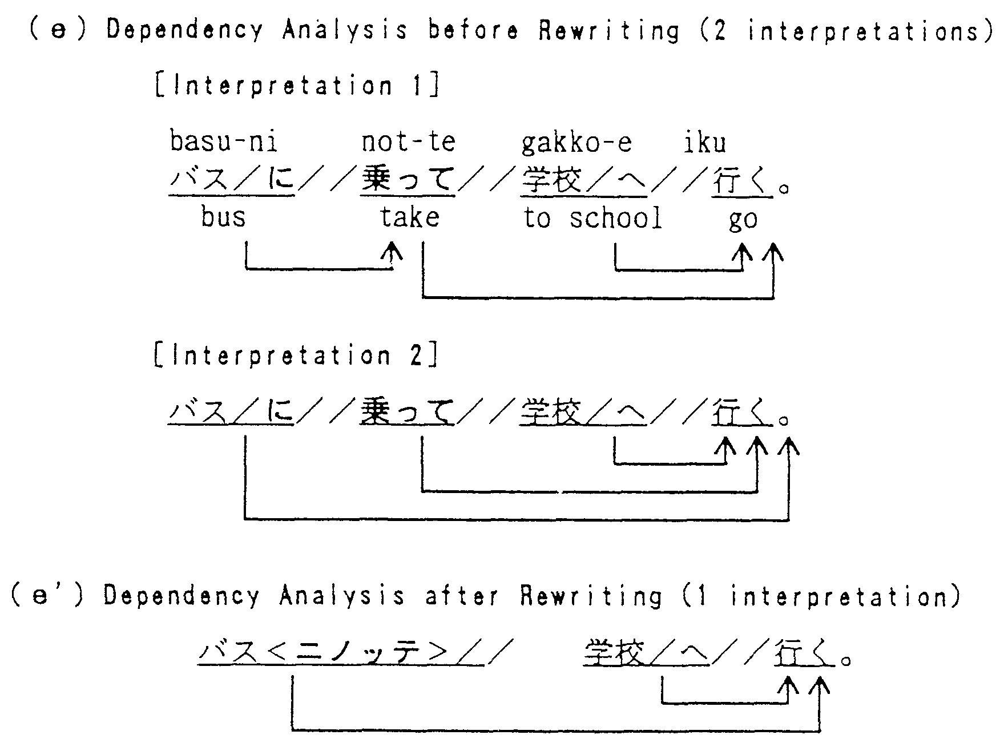
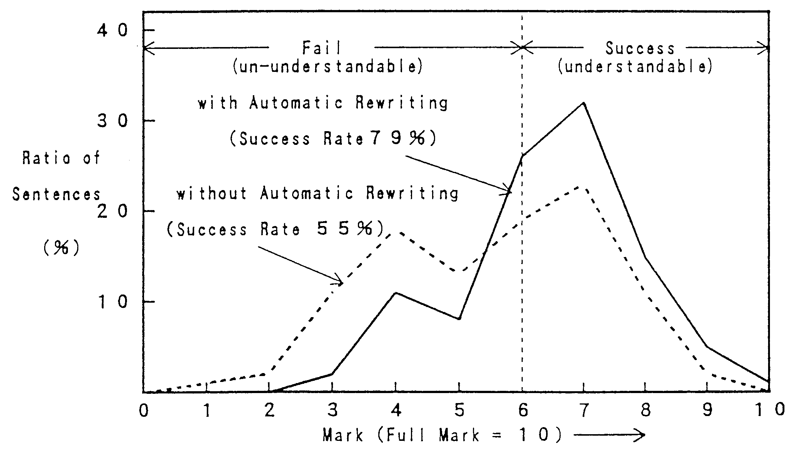

To improve the quality of machine translation, it is important to develop a translation method that takes into account the conceptual differences between languages that cause difficult problems in translation. These problems typically occur with expressions that must be subjected to manual pre-editing of the source texts.
This paper proposes a translation method that includes an automatic source text rewriting function. This method has the advantage of being able to use existing translation functions for the translation of difficult-to-translate expressions. At the same time, it improves processing efficiency by reducing ambiguities in syntactic and semantic analysis. This method is an extension of the Multi-Level Translation Method, on which the Japanese to English Machine Translation System ALT-J/E is based.
According to translation experiments using newspaper articles, rewriting rules were applied to 44 sentences (43%) out of a total 102 sentences (in 32 articles), an aggregate total of 52 locations. Translation quality was improved in 33 sentences (75%) of the total and there was no degradation in the remainder. Furthermore, ambiguities in the semantic analysis were reduced from an average 5.39 per sentence to 1.31 per sentence. These results show that this simple method gives a substantial improvement in translation quality.
To date, extensive research has been undertaken in machine translation and practical systems are being used to translate actual documents[1]. Unfortunately, the quality of translated texts continues to be problematic, resulting in a search for new theories and suggestions for innovative systems[2]. Many research efforts seeking to improve the quality of translations have been conducted in recent years[3,4].
Considering the fact that language is the means for expressing the manner in which objects are viewed by the speaker, the conceptual differences between language groups must be considered important [5,6]. To realize a translation method that pays close attention to these differences, yet does not lose the meaning of the original text, the following two approaches can be considered.
| 1) | To refrain from excessively parsing the source expression, yet seek combinations of words which have predicated meanings for replacement within the original expression (non-literal translation). | ||
| 2) | To automatically rewrite the original text into readily translatable expressions without changing the meaning of the original expression (rewriting into literally translatable expressions). |
The first approach is adopted by the Multi-Level Translation Method [7,8] that takes into account the differences in speaker's perception according to languages. More recently, an empirical approach has come to encroach on the traditional theoretical approach, resulting in knowledge-based translation [9-11] or example-based translation [12,13]. The example-based method seeks to find expressions in the source language that correspond directly with those of the target language, and must be regarded as using the first approach.
In contrast, the second approach mimes conventional manual pre-editing. Efforts are made to restrict expressions so as to facilitate translation and to develop a program that supports the checking of the source language text [14,15].
Differences in concepts are felt to be clearly manifested in those situations in which machine translation systems encounter difficulties. If expressions that previously required manual pre-editing could be translated directly, machine translation systems would be more useful.
This paper proposes a method of machine translation that includes the automatic rewriting of the source text. This method extends the Multi-Level Translation Method to include the second approach, automatically rewriting expressions that are difficult to translate by machine.
Specifically, the types and characteristics of expressions and sentence structures that are subjected to automatic rewriting of the source text in Japanese to English MT are examined. These are separated into elements that can be rewritten within the source language framework and elements that need to be directly rewritten into expressions of the target language. Based on this understanding, an automatic rewriting method is proposed.
This method aims at upgrading translation quality, and at the same time, retaining advantages[16] such as1:
| 1) | Existing translation functions can be used to translate rewritten expressions, thus the need for any new translation algorithm is avoided, and, | ||
| 2) | Ambiguities in syntactic and semantic analyses are reduced which reduces processing time. |
These benefits were confirmed by the following experiments in which the proposed method was applied to translation of the newspaper articles.
Expressions which meet all of the following conditions are to automatically rewritten.
| Condition 1: | Accurate translation is not possible in the existing form. | ||
| Condition 2: | A rewriting method exists that does not significantly change the meaning. | ||
| Condition 3: | The rewritten source can be translated. | ||
| Condition 4: | No undesirable side effects occur with respect to existing translating functions. |
Of the foregoing, Conditions 1 through 3 are practically identical with manual pre-editing, but Condition 4 differs. Details are discussed below.
(1) Cases Rendering MT Impossible
Consider Condition 1. Expressions in actual documents for which appropriate translation is not possible can be generally classified as follows.
| (i) | The source text is erroneous. | |||||
| 1. | It does not follows the conventions of the source language. (Wrong kanji, missing characters, erroneous syntax, etc.) | |||||
| 2. | There is unresolvable ambiguities. (analysis is not possible) | |||||
| 3. | The contents are erroneous. | |||||
| (ii) | The source text could be translated by existing technology, but implementation is not complete. | |||||
| 1. | There are system bugs (in programs, dictionaries or rules) | |||||
| 2. | The system lacks translation functions for some expressions. | |||||
| (iii) | The source text requires a high level liberal translation which is difficult with existing technology. | |||||
| 1. | Due to the absence of expressions in the target language which correspond directly to source language expressions, there is a need to reword the source based on the appraisal of the speaker's intentions. | |||||
| 2. | Some sections do not need to be translated due to differences in customs. | |||||
The foregoing, with the exception of (i)-3, fall within the scope of text error detection/correction, areas in which research efforts have been exerted for some time2. The areas causing problems in Japanese-English machine translation are (ii) and (iii).
(2) Rewriting without Change in Meanings
Let us next consider the second condition. In the case of manual pre-editing, rewriting is not possible unless an alternative expression can be found within the source language that does not change the meaning. In contrast, when rewriting within the translation system, if there is an appropriate expression in the target language, this can be indicated directly, even if there is no such appropriate expression within the source language.
Thus, targets for automatic rewriting of the source language can be regarded as one of the following categories.
| (A) | There is an alternative expression which can be translated by the existing system. ("Rewriting within the Source Language") | |
| (B) | No alternative expression exists in the source language, but there is at least one corresponding target language expression. ("Rewriting into Pseudo Source Language") |
In rewriting these two categories, (A) results in a sentence which can be understood also as a source language sentence3. (B), however, yields expressions that correspond closely to the target language and, therefore, the resulting sentence need not necessary be understandable as a source language sentence.
(3) Possibility of Translation after Rewriting
Regarding Condition 3, whether translation is possible after rewriting must be judged in the same manner as with manual pre-editing and would need to be confirmed through experimentation.
(4) Rewriting without Undesirable Side Effects
Automatic rewriting is quite different from human pre-editing because rewriting rules will be applied to ail expression candidates. If any such rule should be inappropriate, there is a possibility that some unexpected expressions may also be rewritten against the aim of the rules. In preparing the rewriting rules therefore, there is a need to consider carefully the range and scope of application so as to avoid any degradation in translation quality. This would also need to be confirmed through experimentation.
Based on experiments with the ALT-J/E MT System, six kinds of Japanese rewriting factors are to be suggested for Japanese to English MT. These factors are separated into two types as follows.
There are 3 types of expressions that should be rewritten within the Japanese language. However, even in cases where rewriting within the Japanese text is possible, if the expression after rewriting results in ambiguity, rewriting into a pseudo source language should be undertaken using an awareness of the corresponding English. This type of expression is excluded from this classification and listed in the next section.
(1) Degenerate Expressions
When verbs are arranged in parallel, the conjugative suffix tends to be omitted and this causes misinterpretation of the verb which appears to be a noun. An example (a) below, the verb "tsuika-suru" (add) has the "suru" omitted and can be misinterpreted as "tsuika" (addition) which can cause the meaning of the entire sentence to be incomprehensible. To avoid such misinterpretation, the conjugative suffix should be supplemented in the original sentence rewritten in (a').
| Shisutemu- | ga | tsuika | oyobi | sakujo- | suru | deta | |||||||
| (a) | システム | が | 追加 | および | 削除 | する | データ | ||||||
| system | add | and | delete | data | |||||||||
| (The data which the system adds and deletes.) | |||||||||||||
| Shisutemu- | ga | tsuika-shi | soshite | sakujo-suru | deta | |||||||
| (a') | システム | が | 追加し、 | そして | 削除する | データ | ||||||
| system | add | and | delete | data |
In compound sentences that jointly use the same verb, the verb for the earlier sentence tends to be omitted. For example, in (b) not only has the verb "tanto-suru" been omitted, but also joshi "wo". This causes the words "Beikoku"(the USA) and "Fukushacho" (vice-president) to be arranged in parallel and prevents the verification of the joshi "wa". In such a case, supplementing the omitted predicate by the correspondence between case elements will facilitate analysis.
| Shacho-wa | Beikoku, | Fukushacho-wa | Oshu-wo | tanto-suru. | ||||||||
| (b) | 社長は | 米国、 | 副社長は | 欧州を | 担当する。 | |||||||
| president | the USA | vice-president | Europe | take charge | ||||||||
| (The president takes charge of the USA and the vice president the europe) | ||||||||||||
| Shacho-wa | Beikoku-wo | tanto-shi, | Fukushacho-wa | Oshu-wo | tanto-suru. | ||||||||
| (b') | 社長は | 米国を | 担当し、 | 副社長は | 欧州を | 担当する。 | |||||||
| president | the USA | take charge | vice-president | Europe | take charge |
(2) Removing Redundancy
Normally, the conjugative particle "ba", besides its meaning as conditional conjunction, can be used to enumerate of nouns as in (c). In the case of noun enumeration, there is a need to take a broad view of the neighboring structure and semantics to arrive at a satisfactory interpretation.
| Otoko-mo | ire-ba | onna-mo | iru | ||||||
| (c) | 男も | いれば | 女も | いる。 | |||||
| also male | be | also female | be | ||||||
| (There is both men and women.) | |||||||||
| Otoko-mo | onna-mo | iru. | |||||
| (c') | 男も | 女も | いる。 | ||||
| also male | also female | be |
The translation of (c) is all but impossible. Therefore, (c) is rewritten to (c') which has practically the same meaning.
(3) Syntactic Re-arrangement
The subject and object tend to be omitted in Japanese sentences with the assumption that these can be understood by the reader. In such a case, a method has been proposed that supplies them by contextual analysis[18]. However, this process sometimes fails due to the lack of contextual information.
For example, sentence (d) lacks both a subject and an object and cannot be translated in this form. The structure of sentences such as these need to be rewritten into a form corresponding to an appropriate English form structure as in (d').
| Nikishu | awase-te | tsuki | gohyaku-dai | seisan-suru. | |||||||
| (d) | 二機種 | 合わせて | 月 | 五百台 | 生産する。 | ||||||
| two types | total | month | 500 unit | produce | |||||||
| (500 unit total of both types will be produced monthly.) | |||||||||||
| Nikishu-no | gokei | gessan-wa | gohyaku-dai-da. | ||||||
| (d') | 二機種の | 合計 | 月産は | 五百台だ。 | |||||
| two types | total | monthly products | 500 units | ||||||
| (The monthly total of both types is 500 units.) | |||||||||
We identify 3 types of expressions.
(1) Independent Phrase Expressions
Among adverbial clauses functioning as verbs in the Japanese language are those which can be translated on the English side into simplified prepositional phrases. But a literal translation will result in a verb clause and in most cases, degrade translation quality. In (e) below, "noru"(ride) is a verb, but "ni-not-te" has a meaning corresponding to "by" which expresses means or method. Thus, a pseudo Japanese language expression "ni-not-te" is devised to replace this. There is in Japanese the joshi "de" which corresponds to the word "by" expressing means or method. But this is avoided since "de" can result in numerous forms of ambiguities that are difficult to analyze and is rewritten into pseudo Japanese language.
| Basu-ni | not-te | gakko-e | iku. | ||||||
| (e) | バスに | 乗って | 学校へ | 行く。 | |||||
| bus | ride | to school | go | ||||||
| (I go to school riding on a bus.) | |||||||||
| Basu | ni-not-te | gakko-e | iku. | |||||
| (e') | バス | ＜ニノッテ＞ | 学校へ | 行く。 | ||||
| bus | by | to school | go | |||||
| (I go to school by bus) | ||||||||
| Sunin-ga | basu-ni | notte, | nokori-wa | densha-ni | noru. | ||||||||
| (f) | 数人が | バスに | 乗って、 | 残りは | 電車に | 乗る。 | |||||||
| several persons | bus | ride | remainder | train | ride | ||||||||
| (Several persons ride on a bus, and the remainder on a train.) | |||||||||||||
In (f), "ni-not-te" is also being used, but in this case, this constitutes a main verb and is not rewritten.
(2) Modal and Tense Expressions
Modal and tense are usually expressed by combinations of joshi and intransitive verb. But there are instances where they are handled by expressions that have been objectified by nouns, verbs and other factors. For example, in (g), the copulative predicate "yotei-da" (be scheduled to, be planning to) clearly expresses "intentional planning", (i) signifies a condition immediately after conclusion of an act by the copulative predicate "tokoro-da" (have just finished ---ing). Expressions such as these are to be separated from objective expressions and rewritten so as to be handled pseudo-linguistically as subjective expressions.
| Sanya Denki-wa | Tokyo-ni | honsha-wo | utsusu | yotei-da. | |||||||
| (g) | 山谷 電気は | 東京に | 本社を | 移す | 予定だ。 | ||||||
| Sanya Denki | to Tokyo | Head office | transfer | plan | |||||||
| (Sanya Denki plans to transfer its head office to Tokyo.) | |||||||||||
| Sanya Denki-wa | Tokyo-ni | honsha-wo | utsusu | ||||||
| (g') | 山谷 電気は | 東京に | 本社を | 移す。(+ plan to) | |||||
| Sanya Denki | to Tokyo | head office | transfer | ||||||
| Kore-wa | watakushi-ga | dashi-ta | yotei-da. | ||||||
| (h) | これは | 私が | 出した | 予定だ。 | |||||
| this | I | submitted | schedule | ||||||
| (This is the schedule that I submitted.) | |||||||||
| Basu-wa | shuppatsu-shi-ta | tokoro-da. | |||||
| (i) | バスは | 出発した | ところだ。 | ||||
| bus | departed | just | |||||
| (The bus has just departed.) | |||||||
| Basu-wa | shuppatsu-suru | ||||
| (i') | バスは | 出発する。( + a state immediately following completion) | |||
| bus | depart | ||||
| (The bus is departing. ( + a state immediately following completion)) | |||||
| Kosenjo-wa | bushi-ga | tatakat-ta | tokoro-da. | |||||||
| (j) | 古戦場は | 武士が | 戦った | ところだ。 | ||||||
| old battlefield | samurai | fought | place | |||||||
| (The old battlefield is the place where samurai fought.) | ||||||||||
Examples (h) and (j) have the simple syntax "A is B" and are not subject to rewriting.
(3) Degenerate Conjunctive Expressions
Among words expressing sentence conjunction, there are those which are meaningless when translated into English. In (k) for example, the expression "noni-tsuzuki" serves merely to indicate the order in which action is taken. In terms of internal expression, sequential conjunction is added as a conjunctive attribute, and is deleted from the source text.
| Kokino-wo | tsuika-suru | noni | tsuzuki, | kairyogata-wo | donyu-suru. | |||||||
| (k) | 高機能を | 追加する | のに | 続き、 | 改良型を | 導入する。 | ||||||
| high performance function | add | continue | revise model | introduce | ||||||||
| (Following the addition of high performance features, a revised and improved model will be introduced.) | ||||||||||||
| Kokino-wo | tsuika-suru | kairyogata-wo | donyu-suru. | ||||||
| (k') | 高機能を | 追加する(+ sequential conjunction)、 | 改良型を | 導入する。 | |||||
| high performance function | add | revised model | itroduce | ||||||
| (A revised and improved model which adds high performance capability will be introduced.) | |||||||||
The Japanese language allows a considerable range of freedom in the arrangement order of clauses. In the case of conjunctive expressions, changes in the order of clauses will, at times, facilitate translation. Example (l) has two components that are verb-like. One is the adverbial clause "miokuri-ni" (to see off) functioning as a verb and the other is the predicate "iku"(go). In this example the phenomena of crossed dependency took place. By regarding these two components as a single unit of a compound predicate, cross dependency can be avoided. However, rewriting the adverbial clause, "to see off" to reflect the meaning "in order to", greatly facilitates translation.
| daitoryo-wo | Narita-ni | miokuri-ni | iku | ||||||||||||||
| president | to Narita | to see off | go | ||||||||||||||
| (l) | 大統領を | 成田に | 見送りに | 行く。 | |||||||||||||
| │ | │ | ↑ | │ | ↑ | ↑ | ||||||||||||
| └──────┼─┘ | └─┘ | │ | |||||||||||||||
| └────────┘ | |||||||||||||||||
| (I go to Narita to see the president off.) | |||||||||||||||||
| daitoryo-wo | miokuri-ni | Narita-ni | iku | ||||||||||||||
| president | to see off | to Narita | go | ||||||||||||||
| (l') | 大統領を | 見送る(in order to) | 成田に | 行く。 | |||||||||||||
| │ | ↑ | │ | │ | ↑ | ↑ | ||||||||||||
| └───┘ | │ | └───┘ | │ | ||||||||||||||
| └────────┘ | |||||||||||||||||
(1) Rewriting Rules
Examples of rewriting rules are shown in Table 1. Expressions which are subjected to rewriting are defined using parts of speech, semantic attributes, dependency relations between words as well as the appearance of written words.
| Index Word | Position of Case Element | Expression to be Rewrited | Expression after Rewriting | ||||
| Contents | Head | Modifier | Contents | Head | Modifier | ||
| 乗る(ride, take) | X1 | [Vehicle] +に(joshi) | (any one) | X2(case relation) | [Vehicle]+に乗って(pseudo joshi) | * | X3(case relation) |
| X2 | 乗る(音便) + て(joshi) | X1 | X3(conjunction) | <deletion> | |||
| X3 | 行く[+*] | X2 | <arbitrarily> | <no change> | X1 | <no change> | |
(2) Phases in Which Rules are Applied
The translation process consists of several phases, such as morphological, syntactic, semantic analysis and other phases. Rewriting at too early a phase will sometimes cause an undesirable reaction because of the lack of analytical information. Conversely, rewriting after analysis has progressed significantly will risk diminishing the effects of ambiguity reduction in successive analyses.
|
 |
|
 |
Thus, we have decided to apply rewriting rules immediately after syntactic analysis, a phase at which it becomes possible to check conditions for the application of these rules. Fig. 1 shows the rewriting process.
(3) Handling of Syntactic Ambiguities
Syntactic ambiguities cannot be solved by just syntactic analysis and several interpretation candidates will generally be produced. Thus, there will be two or more candidates for one sentence. Moreover, there will be cases in which rewriting rules can be applied to some candidates but not to others. In such a case, we can define rewriting rules so precisely that the candidate for which the rewriting rule is applicable can be assumed to be the accurate interpretation.
For example, in example (e) shown previously, the syntactic analysis produces two interpretations as shown in Fig. 2-(e). A rewriting rule is applied to Interpretation 1 resulting in (e'), but for Interpretation 2, it is not applicable. In such a case, correct interpretation can be easily determined by deleting the interpretation for which rules are not applicable.
Rewriting rules for Japanese sentences, as discussed in Chapters 2 and 3, were applied to the Japanese to English MT System, ALT-J/E. The results of translation obtained with and without automatic rewriting were compared.
(1) Test Sentences and Number of Rules Applied
102 leading sentences from 32 articles in the Nikkei Sangyo Newspaper were selected as test sentences. The average number of characters in the source text was 44 characters per sentence and each sentence contains an average of 21 words. The leading section of each article consisted of 3 to 5 sentences. Since each article had some context, they were translated article by article4; evaluations, however, were conducted sentence by sentence.
A total of 940 rewriting rules were prepared based on 500 newspaper article sentences including the aforementioned test sentences and on 3,700 functional test sentences.
(2) Standards for Grading Translation Quality
The standard for grading translation quality was determined by modifying the ALPAC 9-level Grading Standards[19]. Full marks are set at 10 points and a successful translation is set at 6 or more points the level where the meaning can be understood by a native reading only the translation. Grading was conducted individually by 3 bilingual persons specializing in Japanese to English translation. The grade averages were rounded out and determined as final scores for each translation.
The results of the experiments are shown in Tables 2 and 3. Rewriting rules were applied to 44 sentences (43%) out of 102 sentences at a total of 52 locations. Some translation examples with and without automatic rewriting are shown rn Table I in the Appendix. The changes that were brought about in translation quality and' in the reduction in ambiguity of semantic analysis with sentences to which rewriting rules were applied were observed as follows.
| |||||||||||||||||||||||||||||||||||||||||||||||||||||||||||||||||||||||||||||||||||||||||||||||||||||||||||||||||||||||||||||||||||||||||||||||||||||||||||||||||||||||||||||||||||||||||||||||||||||||||||||||||||||||||||||
| [c.f.]■: Region of Quality Degraded | |||||||||||||||||||||||||||||||||||||||||||||||||||||||||||||||||||||||||||||||||||||||||||||||||||||||||||||||||||||||||||||||||||||||||||||||||||||||||||||||||||||||||||||||||||||||||||||||||||||||||||||||||||||||||||||
| Test sentences: Newspaper articles 102 sentences (32articles) | |||||||||||||||||||||||||||||||||||||||||||||||||||||||||||||||||||||||||||||||||||||||||||||||||||||||||||||||||||||||||||||||||||||||||||||||||||||||||||||||||||||||||||||||||||||||||||||||||||||||||||||||||||||||||||||
| Sentence Length: Average 44 characters/sentence (21 words/sentence) | |||||||||||||||||||||||||||||||||||||||||||||||||||||||||||||||||||||||||||||||||||||||||||||||||||||||||||||||||||||||||||||||||||||||||||||||||||||||||||||||||||||||||||||||||||||||||||||||||||||||||||||||||||||||||||||
| |||||||||||||||||||||||||||||||||||||||||||||||||||||||
| [c.f.] | Test sentences: Newspaper articles, 102 sentences (32 articles) | ||||||||||||||||||||||||||||||||||||||||||||||||||||||
| Sentence Length: Average 44 characters/sentence (21 words/ sentence) | |||||||||||||||||||||||||||||||||||||||||||||||||||||||
| Two or more rules are applied to 10 sentences. | |||||||||||||||||||||||||||||||||||||||||||||||||||||||
| In these cases, the dominant rule is picked up. | |||||||||||||||||||||||||||||||||||||||||||||||||||||||
(1) Improvement in Translation Quality
Of the 44 sentences to which rules were applied, 33 sentences (75%) were improved in quality. The rate of passing grades for all 102 sentences rose from 55% to 79%. The average score for all 102 sentences rose from 5.71 points prior to application to 6.59. The scores of translation achieved with and without this method are shown in Fig. 3.
|
 |
The rewriting rules were in most cases applied to translations of a lower level of quality. The average score for the 44 sentences to which the rules were applied rose from 4.3 points before application to 6.7 after, an average improvement of over 2 points.
In particularly, for sentences with translation grades of 4 to 5 points (48% of total), many (15/19 = 79%) were improved to passing grades of 6 or higher. Sentences with original grades of 3 points or lower are widely affected by errors beyond the range of rewriting, but even here, the pass rate was brought to as high as (9/16 = 56%).
24 sentences which were originally unacceptable (below 5 points) changed to passing quality (6 points or higher) by application of the rewriting rules. A breakdown reveals 5 sentences were rewritten within the Japanese language, 18 sentences were rewritten into pseudo Japanese, and 1 sentence used both types of rewriting.
The performance improvements achieved by rewriting into pseudo Japanese were found to be a major factor. This type of rewriting decreases the burden of the English sentence generation as well as preventing occurrences of translation errors after rewriting. We seek to further strengthen this type of rewriting.
A look at the relationship between the types of rewriting rules and their benefits reveals that the rewriting of independent phrase expressions was applied most frequently and gave the most significant benefits.
(2) Translated Text Compaction
From the viewpoint of sentence compaction, rewriting degenerate expressions would necessarily increase (average 4.3-word increase) the number of words in the translated sentences. Other types of rewriting rules, however, recorded a decrease in the number of words (average 1.8-word). Overall, the decrease in the number of words remains at a level of about 0.8 words. Not much can be expected therefore, in terms of sentence compaction.
(3) Analytical Ambiguity Reduction
Considering the 44 sentences to which rewriting rules were applied, ambiguities in semantic analyses were reduced from an average of 5.39 to 1.31. This phenomenon contributes toward the improvement of translation quality and also toward improving the speed of the semantic analysis.
A translation method featuring automatic rewriting of source texts has been proposed and implemented on the Japanese to English MT system, ALT-J/E.
Specifically, target expressions for rewriting are classified into (1) cases whereby alternative source language expressions which can be translated by this system exist ("rewriting within the source language"), and (2) cases where no alternative source language expression exist, but expressions which partially correspond to the target language exists ("rewriting into pseudo source language"). Automatic rewriting has been realized for a total of six different types of expressions.
In translation experiments using newspaper articles, 44 sentences (43%) from a total 102 sentences, an aggregate total of 52 locations, were rewritten. Of the foregoing, 33 sentences (75%) were regarded as having been improved in quality. The sentences to which rewriting rules were applied had their average number of ambiguities in the semantic analyses reduced 5.39 to 1.31. The experiments have, therefore, confirmed that this method reduces ambiguities as well as upgrades translation quality.
From the view point of implementation, this method has the advantage that it enables the use of existing translation capabilities for translation of difficult-to-translate expressions. Therefore, this method is one of the simplest ways of improving translation quality.
The authors wish to thank Dr. M. Miyazaki, Mr. A. Yokoo and other members of the MT research group for valuable discussions. They also wish to thank the member of NTT Advanced Technology Corp. for implementing this method into the ALT-J/E system.
| Types of Rewriting | No | Original Japanese Sentence | What to Rewrite and How | Translation without Automatic Rewriting | Translation with Automatic Rewriting |
| Rewriting within the Source Language | 1 | 二階にショールーム、三階に商談室、会議室、セミナー室を開設し、 事務室は四階以上になる。 | [Degenerate Expression] ショールームを開設し、 |
C. Ito Techno-Science Corp. will set up a conference
room, a meeting room and a seminar room in the second floor to a show room and
the third floor and an office will reach the fourth and higher floors.
<grade = 3> |
C. Itoh Techno- Science Corp.
will set up a show room in the second floor and will set up a conferencc
room, a meeting room, and a seminar room in the third floor and an office will
reach the fourth and higher floors.
<grade = 6> |
| 2 | 二機種合わせて月産四百台生産する。 | [Syntactic Re-arrangement] → 二機種の合計月産は400台だ。 |
It produces Midori Denki 合わせて in 2 models in 400
units per month. <grade = 2> |
The monthly output of 2 models is 400 units.
<grade = 8> | |
| Rewriting into Pseuddo Soerce Language | 3 | ソフト会社、N &C ソフトウエアはシステムハウスのユニコムオートメーションと共同で パソコンを使ったカラー印刷システムアトリエ・ ビットを開発した。 | [Independent Phrase Expression] と共同で → jointly with を使った → using |
N&C Sottware Corp., a soft company, developed Atlier Bit, the system of
colorprinting that used a personal computer by Unicom Automation Corp. and the
synergic of a system house. <grade = 4> |
N&C Software Corp., a software company, developed Atlier Bit, the color printing
system using a Personal computer, jointly with Unicom Automation
Corp., a system house. <grade = 9> |
| 4 | 出版取次はもともと利益率が低いことに加えて、 出版物も需要が鈍化しているため苦しい経営を余儀なくされている。 | [Degenerate Conjunctive Expression] ことに加えて、 → not only 〜 but also 〜 |
Because it adds a publication agency to that a profit rate is low originally and
the demand for publication is slackening, tight management is made to be
unavoidable. <grade = 4> |
Because not only the profit rate of a publication agency is low originally,
but also the demand for publication is slackening, tight management is
made to be unavoidable. <grade = 7> | |
| 5 | 富山センターはソフト開発要員五十人でスタート、 百五十人に増やす計画。 | [Modal and Tense ] 計画。 → be planning to 〜 |
The Toyama Center is a start in a development staff of 50 and is a plan
increased to 150 person. <grade = 4> |
The Toyama Center starts in a development staff of 50 and is planning to
increase the Toyama system Center to 150 people.
<grade =7> |